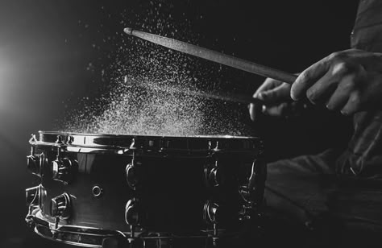

The Art of Drumming
This name reflects the core focus of the site, which is the exploration of the musical, cultural, and educational aspects of drums and drumming. It emphasizes the artistic side of drumming and how it's the heartbeat of music.
Site Purpose
The purpose of this site is to share knowledge and passion for drumming. It will explore the history and cultural significance of drums, introduce different types of drums, and provide learning resources and tips for aspiring drummers.
Scenarios
- What are the main types of drums and how are they used in different music genres?
- Where can I find beginner tips to start learning the drums?